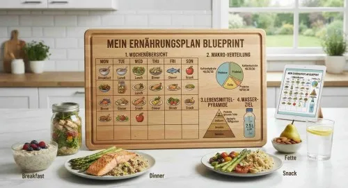

Das Karriere Master-Kit für das praktische Jahr im Ausland
Produktprofil · Marktplatz-Daten 2026-10-09 · Verkaufsseiten-Recherche 2026-10-09 · Kategorien: Profession & Job
- Das Karriere Master-Kit für das praktische Jahr im Ausland ist ein/e E-Book in Profession & Job, vertrieben über den Digistore24-Marktplatz von Anbieter VeloxForge, gelistet seit 2026-09-09.
- Listenpreis $82.59; Digistore24 meldet — Checkout-Konversion, — Stornierungsquote und 50 % Affiliate-Provision.
- Verdienst pro Verkauf (Affiliate): $41.30 (Anbieter-seitige Statistik, keine Prognose).
Interesse an Das Karriere Master-Kit für das praktische Jahr im Ausland? Aktueller Preis, Boni und Garantiebedingungen finden Sie auf der offiziellen Seite des Anbieters:
Offizielle Verkaufsseite ansehen
Affiliate-Link (Werbung) — wir verdienen ggf. eine Provision, ohne Mehrkosten für Sie.
Marktplatz-Daten
| Produkttyp | E-Book |
|---|---|
| Preis | $82.59 (Single payment) |
| Affiliate-Provision | 50 % |
| Garantie/Rückgabe | Laut Verkaufsseite des Anbieters — vor dem Kauf auf der offiziellen Seite prüfen |
| Anbieter | VeloxForge (gelistet seit 2026-09-09) |
| Marktplatz-Statistiken* | Checkout-Konversion — · Stornoquote — · Verdienst/Verkauf $41.30 |
* Anbieter-seitige Statistiken von Digistore24; sie hängen von der Traffic-Qualität ab und sind keine Prognose.
Marktplatz-Beschreibung des Anbieters
Karriere-Masterkit PJ Schweiz & USA – Dein Leitfaden für Tertial-Bewerbungen, Visum und klinischen Alltag im Ausland Das Karriere-Masterkit für das PJ in der Schweiz und den USA gibt dir einen strukturierten Überblick über Bewerbungsfristen, Formalitäten, Prüfungsvoraussetzungen und Visumsverfahren – mit fertigen Vorlagen auf Deutsch und Englisch. Sofort als PDF verfügbar. Das ist enthalten: Schri…
Von der Verkaufsseite des Anbieters
Seitentitel: Landingpage PJ Ausland -
Meta-Beschreibung: Das ultimative Karriere-Masterkit für das PJ in der Schweiz und in den USA: Souverän durch das Tertial im Ausland Der ultimative Leitfaden für...
Hauptüberschrift
Das ultimative Karriere-Masterkit für das PJ in der Schweiz und in den USA: Souverän durch das Tertial im Ausland
Abschnitts-Überschriften
- Warum unser Karriere-Kit?
- Das ultimative Karriere Master-Kit für das praktische Jahr (PJ) im Ausland
- Das exklusive Studenten-Bundle
Einstiegstext
Der ultimative Leitfaden für Tertial-Bewerbungen, Examen, Visabestimmungen und den klinischen Alltag im Ausland - inklusive Vorlagen für Unterassistentenstellen, Clinical Electives und USMLE
Anleitung zur frühzeitigen Bewerbung für begehrte Unterassistenten-Stellen in Schweizer Kantons- und Regionalspitälern (12 bis 18 Monate im Voraus), Klärung von Formalitäten wie Aufenthaltsbewilligung, ZSR-Nummer, Krankenversicherung sowie Lohn und Kost & Logis
Anforderungen für klinische Electives an US-Universitätskliniken, Vorbereitung auf USMLE Step 1 (Pass/Fail-Status) und Step 2 CK, J-1 Visum sowie ECFMG-Sponsoring und Nutzung des VSLO/eQual-Portals
Muster-Anschreiben auf Deutsch für die Schweiz sowie auf Englisch für die USA (Cover Letter) und ein internationaler Lebenslauf im CV-Format für den reibungslosen Bewerbungsprozess
Recherche-Methode: rohes HTML · 302 Wörter · Qualität: medium · recherchiert am 2026-10-09. Vollständige Recherche-Datei (MD) ↗
Wie Produkte dieser Art geliefert werden
Allgemeiner Hinweis zu diesem Produkttyp (keine anbieterspezifische Anleitung): E-Books auf Digistore24 werden als digitaler Download geliefert (meist PDF/EPUB): direkt nach dem Checkout erhalten Sie einen Downloadlink oder Mitgliederzugang und können auf jedem Gerät lesen. Für die genaue Anwendung von Das Karriere Master-Kit für das praktische Jahr im Ausland sind die offizielle Verkaufsseite und die enthaltenen Materialien maßgeblich.
Gut zu wissen
- Keine Garantie-Formulierung in unserer Recherche gefunden — bestätigen Sie das Rückgabefenster auf der offiziellen Seite, bevor Sie kaufen.
Ähnliche Angebote in Beruf & Karriere

ZUGRIFF FÜR ALLE! Jede Person, die ein Arbeitsverhältnis mit Ihnen als Schulgemeinde hat sowie eine E-Mail-Adresse von Ihrer Schule, hat die Zufriffsberechtigun

MATRIXPRINZIP – High-Ticket-Produkt mit bis zu 820,56€ Provision pro Verkauf! Mindset, emotionale Intelligenz und finanzielle Intelligenz – genau die Fähigkeite

Tägliches (!) ELITE VIP Erfolgs-Coaching per Video mit Helmut Ament365 Videos - Weltweit einzigartig (!) 365 Tage ein weltweit einzigartiges Erfolgs-Coaching!In

Die RS Piano-Akademie bietet umfassende und interaktive Klavierkurse, die vom Anfänger- bis zum Fortgeschrittenenniveau reichen. Diese Kurse wurden entwickelt,
Weitere Angebote von VeloxForge

Geld mit KI: 10 Methoden für 2026 – Das Praxis-Handbuch für deinen Einstieg Dieses Handbuch zeigt dir 10 konkrete Wege, wie du mit KI-Tools Geld verdienen kanns
Du erhältst sofortigen Zugang zu deinem PDF-Download (ca. 30 Seiten). Der Fokus-Blueprint enthält 6 Kapitel, einen 30-Tage-Plan und eine tägliche Checkliste – f
Self-Care & Habit-Tracking Journal – Dein 30-Tage-System für mehr Struktur und gute Gewohnheiten Das Self-Care & Habit-Tracking Journal begleitet dich 3

Ernährungs-Blueprint – Dein 4-Wochen-Orientierungsguide für einen bewussteren Umgang mit Ernährung Der Ernährungs-Blueprint begleitet dich vier Wochen lang mit
Wo Sie es sich ansehen können
Aktuelle Preise, Garantie und Boni finden Sie auf der offiziellen Verkaufsseite:
Offizielle Verkaufsseite ansehen
Das ist ein Affiliate-Link (Werbung) — kaufen Sie darüber, verdienen wir ggf. eine Provision, ohne Mehrkosten für Sie.